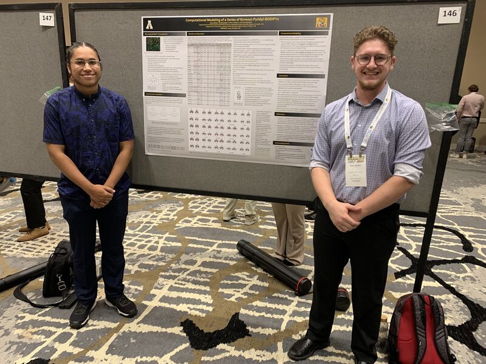
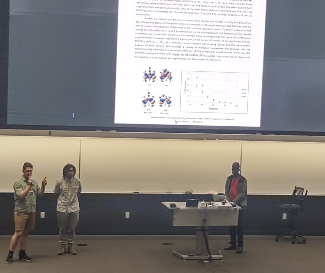

Dylan in Action!


Publications:
- Substituent Effects on the Photophysical Properties of a Series of 8(meso)-Pyridyl-BODIPYs: A Computational Analysis of the Experimental Data https://doi.org/10.3390/physchem4040034
- 8(meso)-Pyridyl-BODIPYs: Effects of 2,6-Substitution with Electron-Withdrawing Nitro, Chloro, and Methoxycarbonyl Groups https://doi.org/10.3390/molecules28124581
- Third Publication